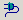
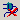
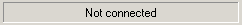

Connection Toolbar
Previous
Top
Connection Toolbar allow to manage connection to a database. Click on Icon to get explanation.
Icon
Fonction

Connect to database

Disconnect from database

Show what connection is currently used